Equipe 1 · Turma 2ESPH · Bairro atendido: Bela Vista, São Paulo/SP
| Integrante (ordem alfabética) | RM |
|---|---|
| Lucas Branquinho | 562262 |
| Vitor Bordalo | 561592 |
| Repositório GitHub | https://github.com/vitorbordalo/citizentech-caminhoseguro |
| Deploy (Render) | https://citizentech-caminhoseguro.onrender.com |
.java, então reflete o que está no repositório. As seções 6 a 8 trazem o banco, a API e as telas.
A seção 9 ensina a rodar tudo, do zero.O CaminhoSeguro é a CitizenTech da Equipe 1 para a Global Solution 2026.2. Ela atende idosos e pessoas com mobilidade reduzida que moram ou circulam no bairro Bela Vista, em São Paulo. A persona do projeto é a dona Maria (72 anos, fictícia), que quer ir sozinha ao posto de saúde e ao mercado. Calçadas irregulares, ladeiras, esquinas sem rampa e travessias perigosas fazem muita gente desistir de sair de casa ou correr risco no caminho.
A solução funciona como duas pontas que se alimentam:
RAPIDA, SEGURA ou ACESSIVEL). A API devolve o passo a passo, o tempo total, o risco acumulado e se o caminho é totalmente acessível. Qualquer usuário também pode registrar uma ocorrência (buraco, esquina sem rampa, iluminação ruim) em um trecho de calçada.ABERTA, EM_ANALISE, RESOLVIDA).O trabalho desta disciplina é a API REST em Java (Spring Boot) que guarda e entrega esses dados, conectada ao banco Oracle da disciplina de Database Design. O mapa do bairro é um grafo: cada local é um nó e cada trecho de calçada é uma aresta (com tempo, risco de 0 a 10, acessibilidade, declividade e largura). A rota é calculada com o algoritmo de Dijkstra, com pesos diferentes por critério (seção 4). Todos os dados do projeto são simulados.
| Funcionalidade | O que a API entrega |
|---|---|
| Cadastros (CRUD) | Usuários, locais, trechos e ocorrências, com GET, POST, PUT e DELETE e validação dos dados. |
| Consulta de domínio | Lista de tipos de ocorrência (com a gravidade sugerida) e filtros por pontoApoio e status. |
| Cálculo de rota | GET /api/rotas com Dijkstra e três critérios. Se vier o usuário, grava o histórico em T_CS_ROTA_CONSULTA (base do indicador de impacto). |
| Tratamento de erros | Respostas padronizadas em JSON, com status 400, 404, 409, 422 e 500, sem expor detalhes internos. |
| Documentação e saúde | Swagger UI em /swagger-ui.html e health check em /api/status (usado pelo Render). |
| Front-end | Quatro telas em HTML, CSS e JS puros (início, rota, ocorrência e painel do agente) que consomem a API. |
| Tecnologia | Uso |
|---|---|
| Java 21 e Spring Boot 3.5 | API REST (spring-boot-starter-web), validação (starter-validation) e DataSource (starter-jdbc). |
| JDBC puro (sem JPA) | DAOs com PreparedStatement, conforme o padrão visto em aula. |
| Oracle (FIAP) e H2 | Oracle com driver ojdbc11; H2 em memória (modo Oracle) para rodar sem a rede da FIAP e nos testes. |
| springdoc-openapi 2.8 | Swagger UI gerado a partir dos controllers. |
| Maven Wrapper, Docker e Render | Build sem instalar o Maven, imagem com JRE 21 e deploy web. |
Quem tem mobilidade reduzida decide o dia pelo trajeto. Uma calçada estreita, uma ladeira forte ou uma travessia curta demais transformam uma ida à unidade de saúde em risco de queda, e muitas pessoas simplesmente deixam de sair. Isso afeta autonomia, saúde e convívio social.
Escolhemos esse problema por quatro razões:
Escolhemos três critérios de rota porque "melhor caminho" depende da pessoa: quem tem pressa quer o mais rápido; dona Maria prefere o mais seguro; quem usa cadeira de rodas precisa do acessível, que descarta trechos inacessíveis e avisa claramente quando não existe caminho.
Do ponto de vista técnico, a arquitetura em camadas (Controller, BO, DAO) deixa cada parte com uma responsabilidade e facilita testar e explicar o código. O contexto público também apoia a escolha: o Censo 2022 do IBGE mostra o envelhecimento da população brasileira, e a norma ABNT NBR 9050 é a referência técnica de acessibilidade em espaços urbanos (por isso o banco guarda declividade e largura da calçada por trecho).
Entregar uma API REST em Java, ligada ao Oracle da FIAP e publicada na nuvem, que permita a idosos e pessoas com mobilidade reduzida da Bela Vista encontrar o caminho mais rápido, mais seguro ou mais acessível a pé, usando os problemas de calçada registrados pela própria comunidade.
model) as oito tabelas do banco e persisti-las com DAOs em JDBC puro.@RestControllerAdvice) com resposta JSON clara e sem vazar detalhes técnicos.Dois indicadores saem direto do banco: o percentual de trechos acessíveis do bairro e o número de rotas acessíveis consultadas por semana (tabela T_CS_ROTA_CONSULTA). Para ampliar a outros bairros basta cadastrar novos locais e trechos, pois a tabela de bairros já existe.
O projeto fica em caminhoseguro-api/, pacote base br.com.fiap.caminhoseguro. O fluxo de uma requisição é Controller → BO → DAO → Oracle, e os erros voltam por um tratador único.
| Pacote | Papel |
|---|---|
model | Uma classe por tabela (Bairro, TipoLocal, Local, Trecho, Usuario, TipoOcorrencia, Ocorrencia, RotaConsulta), com as validações do Bean Validation. |
dao | Acesso ao banco com JDBC puro (PreparedStatement). Todos os DAOs estendem BaseDAO, que recebe o DataSource do Spring e concentra a conversão de datas, números e S/N. Sem JPA. |
bo | Regras de negócio e validações; chama os DAOs. CalculadoraRotaBO implementa o Dijkstra sem tocar no banco (recebe os trechos prontos). |
controller | @RestController com GET, POST, PUT e DELETE. Só recebe e devolve HTTP. |
exception | Cinco exceções próprias e o ManipuladorExcecoes (@RestControllerAdvice). |
dto | RotaResposta (resposta da rota) e ErroResposta (formato do erro). |
config | CorsConfig (libera o front) e OpenApiConfig (título do Swagger). |
IDOSO, PCD, CUIDADOR, MORADOR e AGENTE, e-mail válido.dataResolucao não pode ser anterior à dataRegistro (422); status RESOLVIDA sem data usa a data de hoje; status padrão ABERTA.Os trechos são bidirecionais. O peso de cada trecho depende do critério:
| Critério | Peso do trecho |
|---|---|
RAPIDA | tempoMin |
SEGURA | tempoMin + 2 × risco |
ACESSIVEL | ignora trechos com acessivel = false; peso tempoMin + risco |
Trecho com ocorrência ABERTA de gravidade 4 ou 5 soma +5 nos critérios SEGURA e ACESSIVEL. Se não existir caminho, a API responde 404 ("Não há rota acessível entre X e Y").
Os diagramas abaixo foram gerados por script a partir dos arquivos .java (doc/gerar_diagrama_classes.mjs): classes, atributos com visibilidade e tipo, métodos públicos, herança e dependências por campos injetados e chaves estrangeiras. Legenda: + público, - privado, # protegido; seta aberta = associação (campo); seta tracejada = uso em assinatura de método; triângulo vazado = herança/realização; losango cheio = composição; caixa tracejada = classe de outra figura, resumida. Em model as entidades se ligam por chave estrangeira (idXxx, que no banco é FK), como no DER. Construtores de classes injetadas por Spring foram omitidos.
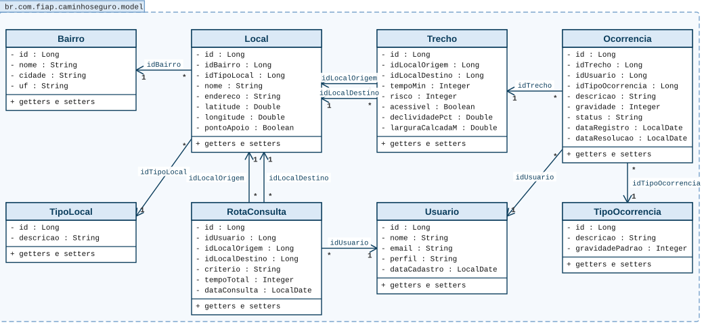
model: as oito entidades e as referências por chave estrangeira (* = muitos, 1 = um).Camadas por recurso. Cada recurso segue o mesmo desenho: o Controller guarda uma referência ao BO (injetada pelo construtor) e o BO guarda os DAO de que precisa. O BO de Usuário, por exemplo, consulta também o DAO de Ocorrência e o de Consulta de Rota para impedir a exclusão de quem tem histórico.
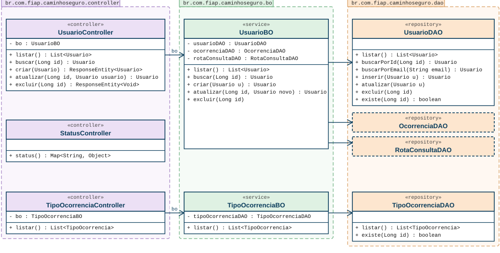
/api/usuarios, /api/tipos-ocorrencia e /api/status.Locais. O LocalBO valida a existência do bairro e do tipo de local (404), o nome único no bairro (409) e impede excluir local que tenha trechos ou apareça no histórico de rotas.
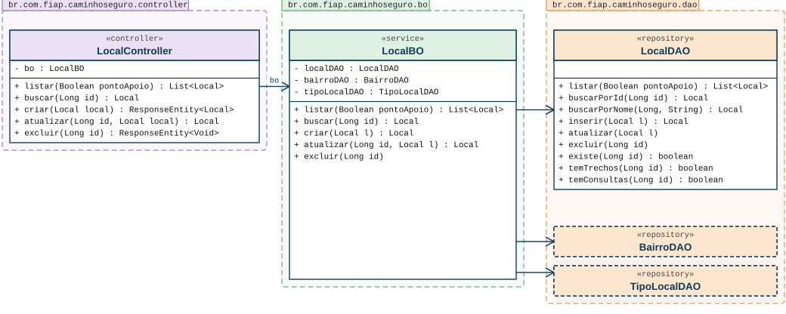
/api/locais.| Endpoints | GET e POST /api/locais (filtro ?pontoApoio=true); GET, PUT e DELETE /api/locais/{id} |
|---|---|
| Regras no BO | bairro e tipo de local precisam existir (404); nome único dentro do bairro (409); pontoApoio vazio vira false; exclusão bloqueada se houver trechos ou histórico de rotas (409). |
Trechos. O TrechoBO exige origem diferente do destino (422), locais existentes (404) e par origem/destino único (409), considerando também o sentido inverso, já que o trecho vale nos dois sentidos.
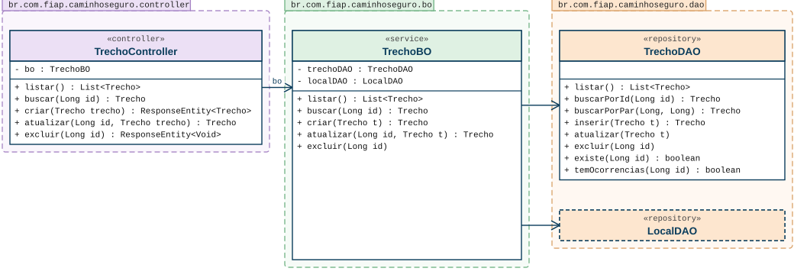
/api/trechos.| Endpoints | GET e POST /api/trechos; GET, PUT e DELETE /api/trechos/{id} |
|---|---|
| Regras no BO | origem diferente do destino (422); locais existentes (404); par repetido, inclusive invertido (409); acessivel vazio vira true (padrão do banco); exclusão bloqueada se houver ocorrências (409). |
Ocorrências. O OcorrenciaBO confere trecho, usuário e tipo (404), aplica os padrões (status ABERTA, data de hoje) e valida as datas (422).
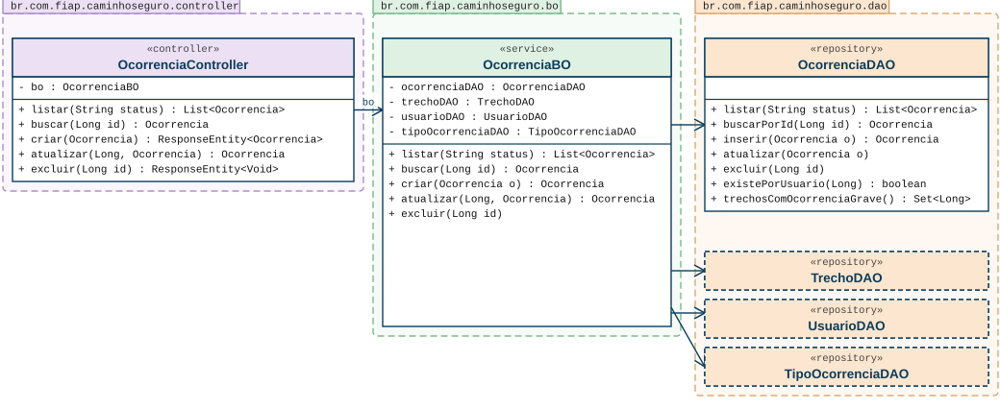
/api/ocorrencias.| Endpoints | GET e POST /api/ocorrencias (filtro ?status=ABERTA); GET, PUT e DELETE /api/ocorrencias/{id} |
|---|---|
| Regras no BO | trecho, usuário e tipo precisam existir (404); status padrão ABERTA; data de registro padrão = hoje (no PUT, mantém a original); RESOLVIDA sem data de resolução usa hoje; resolução anterior ao registro é rejeitada (422). |
Rota. O RotaBO valida critério e locais, carrega os trechos e as ocorrências graves abertas, chama a CalculadoraRotaBO (Dijkstra, sem acesso a banco), monta o RotaResposta e, se vier usuario, grava a consulta.
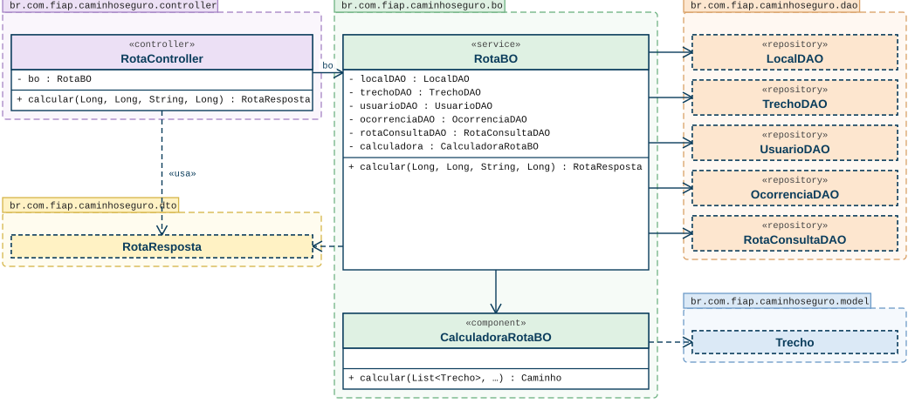
/api/rotas e cálculo do caminho (a classe aninhada CalculadoraRotaBO.Caminho é o retorno do cálculo).| Endpoint | GET /api/rotas?origem=&destino=&criterio=&usuario= (usuario opcional) |
|---|---|
| Regras no BO | critério entre RAPIDA, SEGURA e ACESSIVEL (400); origem diferente do destino (422); locais e usuário existentes (404); sem caminho, 404 com mensagem clara; ocorrência aberta de gravidade 4 ou 5 soma +5 ao trecho em SEGURA e ACESSIVEL. |
DAO. Os oito DAOs herdam de BaseDAO (abstrata), que abre conexão pelo DataSource, converte erros SQL em ErroBancoException e oferece utilitários de data, número e S/N.
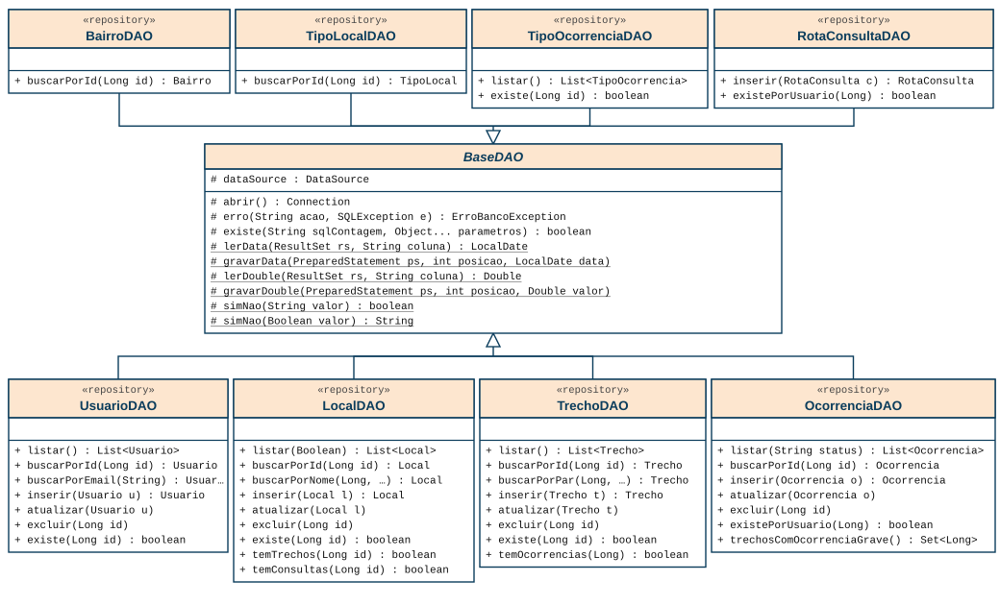
dao: hierarquia a partir de BaseDAO (os métodos sublinhados são estáticos).Exceções. Cada regra violada lança uma exceção própria (todas RuntimeException). O ManipuladorExcecoes converte cada uma em resposta JSON padronizada (ErroResposta) com o status certo: 404, 422, 409, 400 e 500. Erros de validação, JSON malformado e parâmetros ausentes também passam por ele.
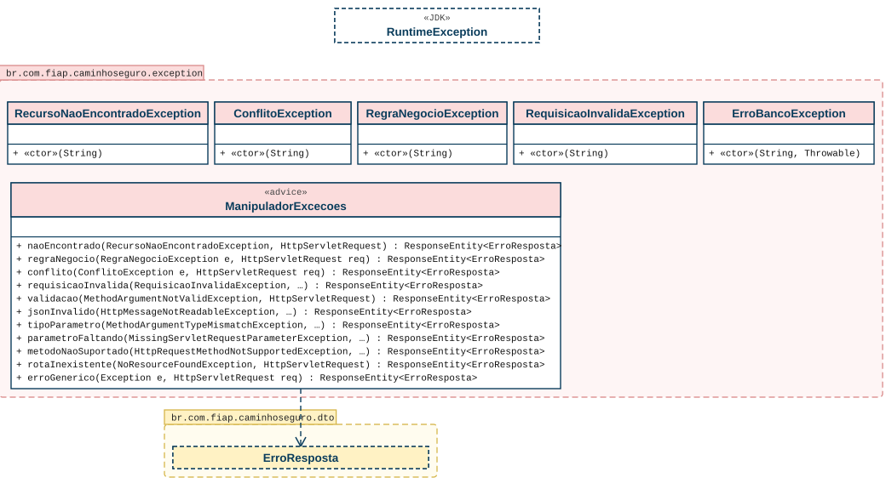
exception.DTO, configuração e classe principal. RotaResposta (com o record LocalResumo) e ErroResposta definem o formato das respostas. CorsConfig libera o front-end e OpenApiConfig define o título do Swagger.
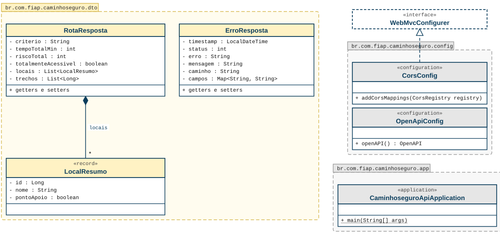
dto e config e a classe CaminhoseguroApiApplication.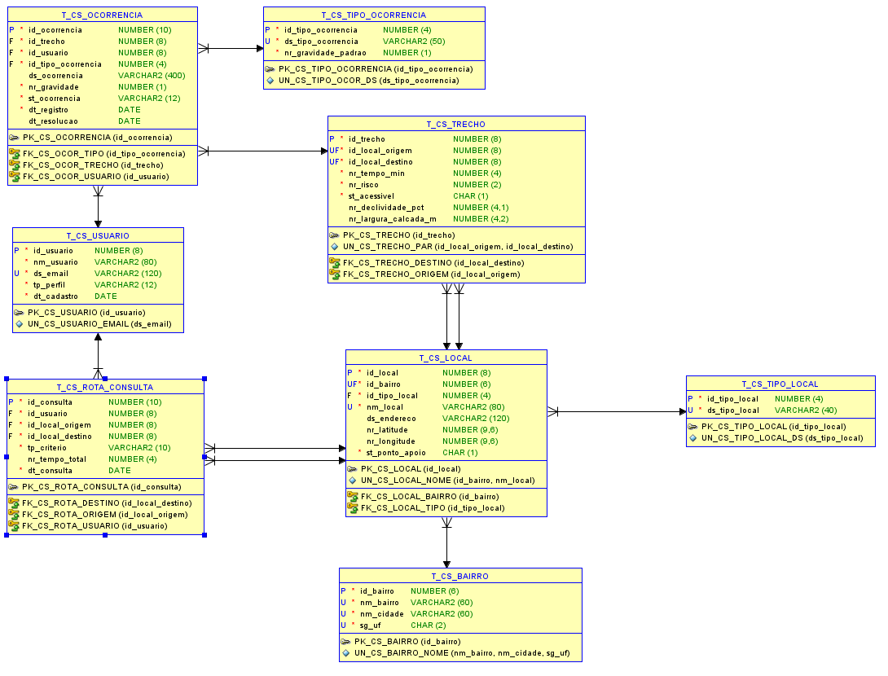
O banco foi projetado na disciplina de Database Design (Oracle Data Modeler) e criado no Oracle da FIAP pelos scripts 04-database/01_DDL_caminhoseguro.sql (tabelas e constraints) e 02_DML_caminhoseguro.sql (dados simulados). São 8 tabelas com prefixo T_CS_; as classes do pacote model correspondem uma a uma a elas.
| Tabela | Classe (model) | Papel | Chaves estrangeiras |
|---|---|---|---|
T_CS_BAIRRO | Bairro | Bairro atendido (Bela Vista etc.) | - |
T_CS_TIPO_LOCAL | TipoLocal | Domínio: residência, unidade de saúde, comércio, ponto de apoio... | - |
T_CS_LOCAL | Local | Ponto do bairro (nó do grafo) | bairro, tipo de local |
T_CS_TRECHO | Trecho | Calçada entre dois locais (aresta, nos dois sentidos) | local de origem, local de destino |
T_CS_USUARIO | Usuario | Idoso, PCD, cuidador, morador ou agente (dados simulados) | - |
T_CS_TIPO_OCORRENCIA | TipoOcorrencia | Domínio dos problemas de calçada, com gravidade padrão | - |
T_CS_OCORRENCIA | Ocorrencia | Problema registrado pela comunidade em um trecho | trecho, usuário, tipo de ocorrência |
T_CS_ROTA_CONSULTA | RotaConsulta | Histórico de rotas pedidas (indicador de impacto) | usuário, local de origem, local de destino |
| Lado 1 (pai) | Lado N (filho) | Coluna da FK no filho |
|---|---|---|
| T_CS_BAIRRO | T_CS_LOCAL | id_bairro |
| T_CS_TIPO_LOCAL | T_CS_LOCAL | id_tipo_local |
| T_CS_LOCAL | T_CS_TRECHO | id_local_origem e id_local_destino |
| T_CS_TRECHO | T_CS_OCORRENCIA | id_trecho |
| T_CS_USUARIO | T_CS_OCORRENCIA | id_usuario |
| T_CS_TIPO_OCORRENCIA | T_CS_OCORRENCIA | id_tipo_ocorrencia |
| T_CS_USUARIO | T_CS_ROTA_CONSULTA | id_usuario |
| T_CS_LOCAL | T_CS_ROTA_CONSULTA | id_local_origem e id_local_destino |
Detalhes de colunas, constraints (CHECK de risco 0 a 10, gravidade 1 a 5, perfil e status) e consultas de apoio estão no documento de Database Design. As colunas S/N do banco (st_acessivel, ponto de apoio) viram Boolean em Java, convertidos no BaseDAO. Para testes sem Oracle, o perfil h2 usa schema-h2.sql e data-h2.sql, equivalentes ao DDL e DML.
Base: /api. JSON em camelCase, datas em yyyy-MM-dd. Os 23 endpoints abaixo são os que existem nos controllers. "Ex." indica o exemplo de corpo da seção 7.1. Sucesso com POST devolve o header Location. Qualquer endpoint pode devolver 500 (erro genérico, sem detalhes internos).
| Método | URL | Descrição | Corpo | Sucesso | Erros |
|---|---|---|---|---|---|
| GET | /api/usuarios | Lista usuários | - | 200 | - |
| GET | /api/usuarios/{id} | Busca um usuário | - | 200 | 400 (id inválido), 404 |
| POST | /api/usuarios | Cria usuário (data de cadastro = hoje) | Ex. 1 | 201 | 400, 409 (e-mail repetido) |
| PUT | /api/usuarios/{id} | Atualiza usuário | Ex. 1 | 200 | 400, 404, 409 |
| DELETE | /api/usuarios/{id} | Exclui usuário | - | 204 | 404, 409 (tem ocorrências ou consultas) |
| GET | /api/locais?pontoApoio=true | Lista locais; filtro opcional por ponto de apoio | - | 200 | 400 (filtro inválido) |
| GET | /api/locais/{id} | Busca um local | - | 200 | 400, 404 |
| POST | /api/locais | Cria local | Ex. 2 | 201 | 400, 404 (bairro ou tipo), 409 (nome repetido) |
| PUT | /api/locais/{id} | Atualiza local | Ex. 2 | 200 | 400, 404, 409 |
| DELETE | /api/locais/{id} | Exclui local | - | 204 | 404, 409 (tem trechos ou histórico) |
| GET | /api/trechos | Lista trechos | - | 200 | - |
| GET | /api/trechos/{id} | Busca um trecho | - | 200 | 400, 404 |
| POST | /api/trechos | Cria trecho | Ex. 3 | 201 | 400, 404 (local), 409 (par repetido), 422 (origem = destino) |
| PUT | /api/trechos/{id} | Atualiza trecho | Ex. 3 | 200 | 400, 404, 409, 422 |
| DELETE | /api/trechos/{id} | Exclui trecho | - | 204 | 404, 409 (tem ocorrências) |
| GET | /api/ocorrencias?status=ABERTA | Lista ocorrências; filtro opcional por status | - | 200 | 400 (status inválido) |
| GET | /api/ocorrencias/{id} | Busca uma ocorrência | - | 200 | 400, 404 |
| POST | /api/ocorrencias | Registra ocorrência (status padrão ABERTA, data de hoje) | Ex. 4 | 201 | 400, 404 (trecho, usuário ou tipo), 422 (datas) |
| PUT | /api/ocorrencias/{id} | Atualiza (ex.: muda o status no painel) | Ex. 5 | 200 | 400, 404, 422 |
| DELETE | /api/ocorrencias/{id} | Exclui ocorrência | - | 204 | 404 |
| GET | /api/tipos-ocorrencia | Lista os tipos de ocorrência (tabela de domínio, só leitura) | - | 200 | - |
| GET | /api/rotas?origem=1&destino=3 | Calcula a rota (Dijkstra). usuario é opcional: se vier, grava o histórico | - | 200 | 400 (critério inválido ou parâmetro ausente), 404 (local/usuário inexistente ou sem rota), 422 (origem = destino) |
| GET | /api/status | Health check (usado pelo Render) | - | 200 | - |
Além da API, /swagger-ui.html abre o Swagger. Recursos só com GET (tipos-ocorrencia, rotas, status) são consultas; os quatro cadastros têm CRUD completo.
Ex. 1. POST /api/usuarios (o PUT usa o mesmo formato). Resposta 201 com Location: /api/usuarios/8:
{ "nome": "Helena Costa Teste", "email": "helena.teste@caminhoseguro.example", "perfil": "MORADOR" }
201 Created
{ "id": 8, "nome": "Helena Costa Teste", "email": "helena.teste@caminhoseguro.example",
"perfil": "MORADOR", "dataCadastro": "2026-11-11" }
Ex. 2. POST /api/locais (idBairro e idTipoLocal precisam existir):
{ "idBairro": 1, "idTipoLocal": 3, "nome": "Padaria Exemplo", "endereco": "Endereço de exemplo - Bela Vista",
"latitude": -23.5601, "longitude": -46.6502, "pontoApoio": false }
201 Created
{ "id": 14, "idBairro": 1, "idTipoLocal": 3, "nome": "Padaria Exemplo", "endereco": "Endereço de exemplo - Bela Vista",
"latitude": -23.5601, "longitude": -46.6502, "pontoApoio": false }
Ex. 3. POST /api/trechos (risco de 0 a 10; trecho vale nos dois sentidos):
{ "idLocalOrigem": 12, "idLocalDestino": 5, "tempoMin": 7, "risco": 3, "acessivel": true,
"declividadePct": 3.0, "larguraCalcadaM": 2.1 }
201 Created
{ "id": 22, "idLocalOrigem": 12, "idLocalDestino": 5, "tempoMin": 7, "risco": 3, "acessivel": true,
"declividadePct": 3.0, "larguraCalcadaM": 2.1 }
Ex. 4. POST /api/ocorrencias (gravidade de 1 a 5; sem status e dataRegistro a API usa ABERTA e a data de hoje):
{ "idTrecho": 8, "idUsuario": 1, "idTipoOcorrencia": 3, "descricao": "Esquina sem rampa em frente à escola.", "gravidade": 4 }
201 Created
{ "id": 11, "idTrecho": 8, "idUsuario": 1, "idTipoOcorrencia": 3, "descricao": "Esquina sem rampa em frente à escola.",
"gravidade": 4, "status": "ABERTA", "dataRegistro": "2026-11-11", "dataResolucao": null }
Ex. 5. PUT /api/ocorrencias/1 (agente marca como resolvida; sem dataResolucao a API usa hoje e mantém a dataRegistro original):
{ "idTrecho": 2, "idUsuario": 1, "idTipoOcorrencia": 3, "descricao": "Esquina da escola sem rampa, precisei descer pela rua.",
"gravidade": 4, "status": "RESOLVIDA" }
200 OK
{ "id": 1, "idTrecho": 2, "idUsuario": 1, "idTipoOcorrencia": 3, "descricao": "Esquina da escola sem rampa, precisei descer pela rua.",
"gravidade": 4, "status": "RESOLVIDA", "dataRegistro": "2026-10-02", "dataResolucao": "2026-11-11" }
Ex. 6. GET /api/rotas?origem=1&destino=3&criterio=ACESSIVEL (casa da dona Maria até o posto de saúde):
200 OK
{ "criterio": "ACESSIVEL", "tempoTotalMin": 11, "riscoTotal": 3, "totalmenteAcessivel": true,
"locais": [ { "id": 1, "nome": "Casa da dona Maria", "pontoApoio": false },
{ "id": 2, "nome": "Praça 14 Bis", "pontoApoio": false },
{ "id": 3, "nome": "Posto de Saúde", "pontoApoio": true } ],
"trechos": [1, 4] }
Ex. 7. Formato dos erros (todos os endpoints). Validação (400), com o mapa campos; não encontrado (404); conflito (409); regra de negócio (422):
400 { "timestamp": "2026-11-11T10:15:02", "status": 400, "erro": "Requisição inválida", "mensagem": "Dados inválidos",
"caminho": "/api/usuarios", "campos": { "nome": "obrigatório" } }
404 { "timestamp": "...", "status": 404, "erro": "Não encontrado", "mensagem": "Local 99 não encontrado", "caminho": "/api/locais/99" }
409 { "timestamp": "...", "status": 409, "erro": "Conflito", "mensagem": "Local 3 não pode ser excluído: possui trechos ligados a ele", ... }
422 { "timestamp": "...", "status": 422, "erro": "Regra de negócio violada", "mensagem": "A origem deve ser diferente do destino", ... }
O front-end é um protótipo web estático (HTML, CSS e JS puros) que consome a API real; os prints abaixo foram tirados com a API rodando. Persona principal: dona Maria, 72 anos. Quem entra pela primeira vez entende o app em 3 passos (escolher os lugares, ver o caminho, avisar um problema), e cada tela indica o próximo passo. Decisões gerais: linguagem simples ("Mais seguro", "Sem degraus" em vez de termos técnicos), letra base de 18 px, alto contraste, tema claro e escuro, botões e alvos de toque com 48 a 56 px, estados sempre com ícone e texto (nunca só cor), foco visível no teclado, campos com <label>, mensagens em regiões aria-live e prefers-reduced-motion respeitado. Como o plano gratuito do Render "dorme", o front avisa "Acordando o servidor…" quando a API demora; se ela não responder, usa dados simulados e mostra o selo "Modo demonstração".
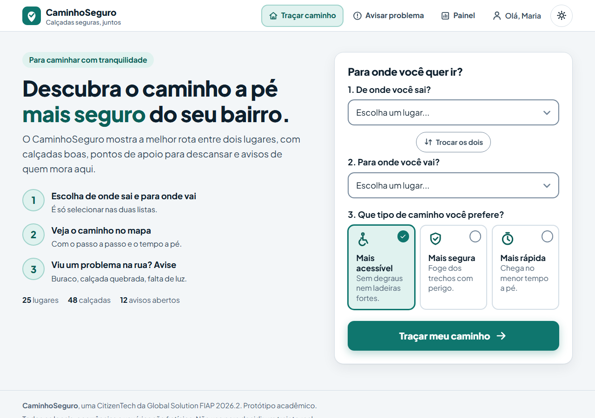
index.html). Explica em uma frase o que é o app e mostra os 3 passos de uso. Formulário numerado: de onde sai e para onde vai (listas de GET /api/locais, sem digitar endereço), tipo de caminho em cartões grandes ("Mais acessível" marcado por padrão) e uma ação principal, "Traçar meu caminho".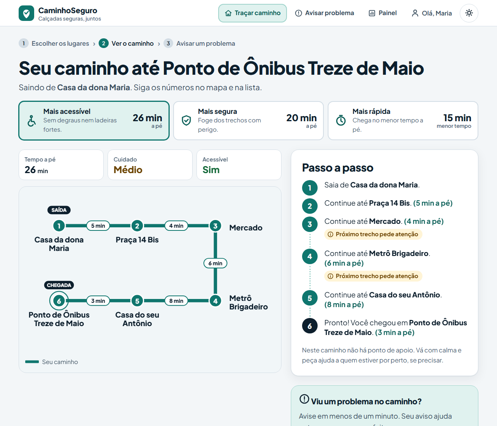
rota.html). Usa GET /api/rotas (uma chamada por critério, para comparar) e GET /api/locais//api/trechos para desenhar o mapa. Três cartões comparam "Mais acessível", "Mais segura" e "Mais rápida"; o mapa mostra o trajeto em formato de linha de metrô, com SAÍDA, CHEGADA, minutos de cada trecho e pontos de apoio; ao lado, o passo a passo em linguagem simples e o atalho "Avisar um problema neste caminho". Sem rota (404) ou origem igual ao destino (422) mostram mensagens amigáveis.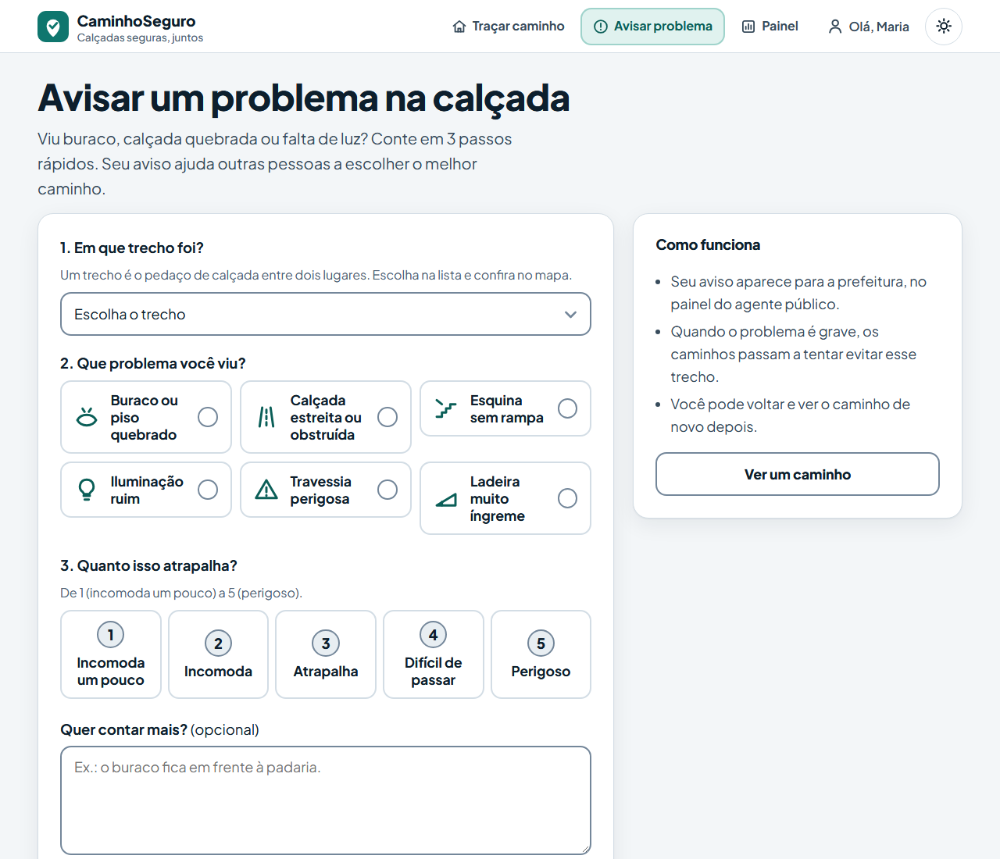
ocorrencia.html). Usa GET /api/trechos, GET /api/tipos-ocorrencia e POST /api/ocorrencias. Formulário em 3 passos: trecho (pré-selecionado quando vem da rota, com mini-mapa), tipo de problema em botões com ícone e gravidade de 1 a 5 em palavras; descrição opcional e tela de confirmação com o próximo passo.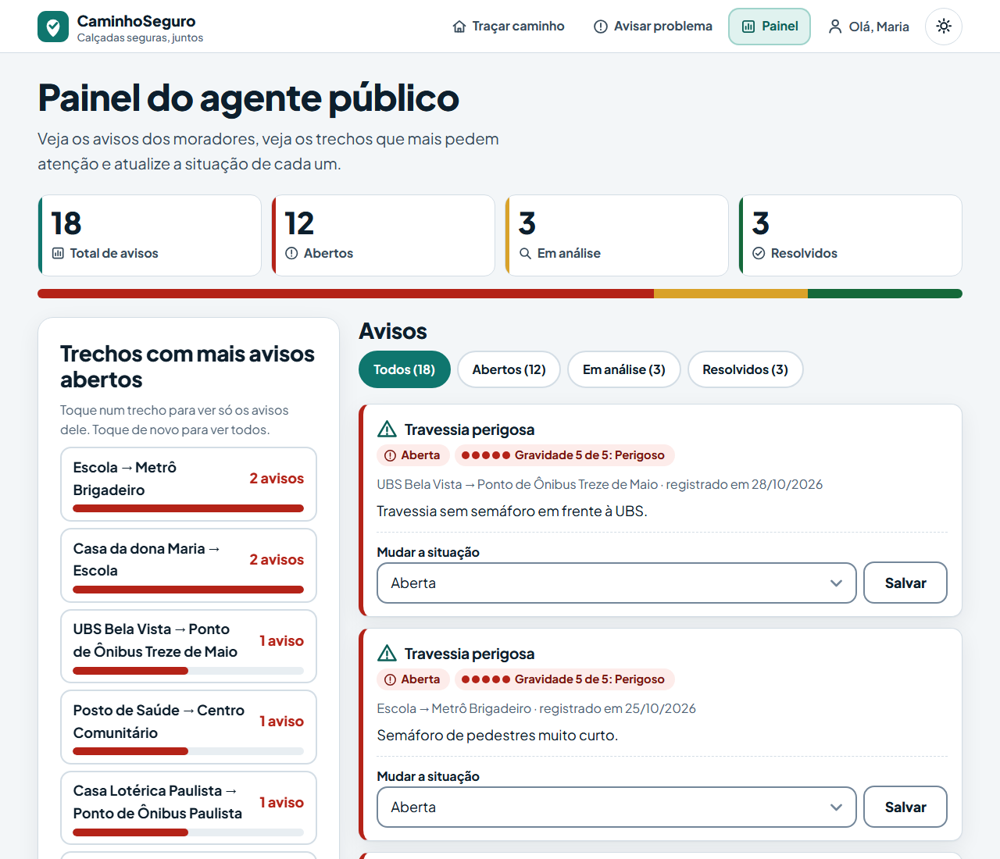
painel.html). Usa GET /api/ocorrencias (com filtro de status) e PUT /api/ocorrencias/{id}. Contadores (total, abertos, em análise, resolvidos), lista dos trechos com mais avisos abertos (tocar filtra os avisos daquele trecho), filtros por situação e troca de situação no próprio cartão.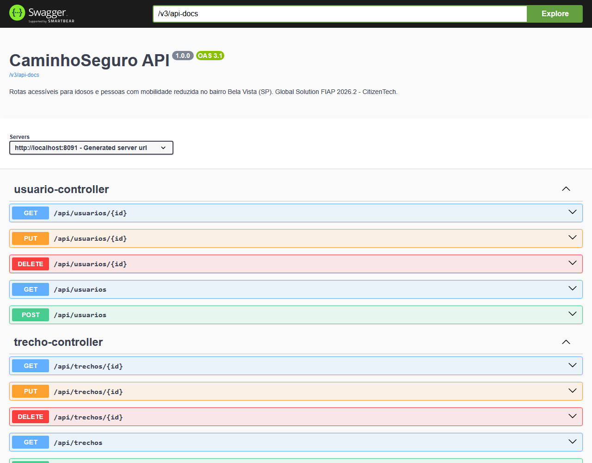
/swagger-ui.html). Lista todos os endpoints da seção 7 e permite testá-los pelo navegador.O layout é pensado primeiro para o celular: uma coluna, sem rolagem lateral; no desktop o conteúdo se reorganiza em duas colunas.
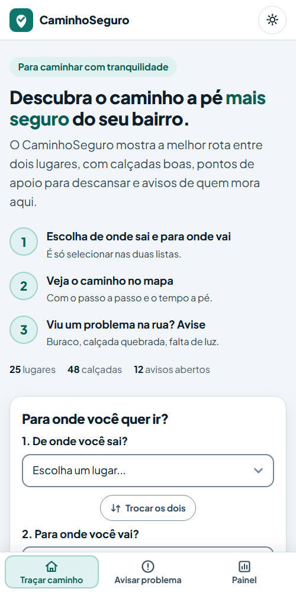
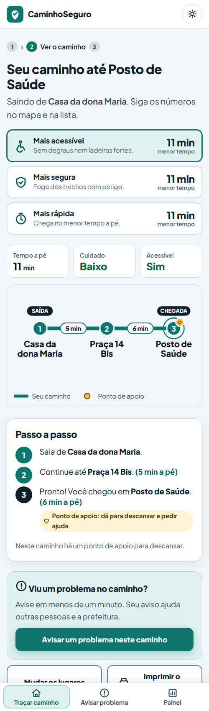
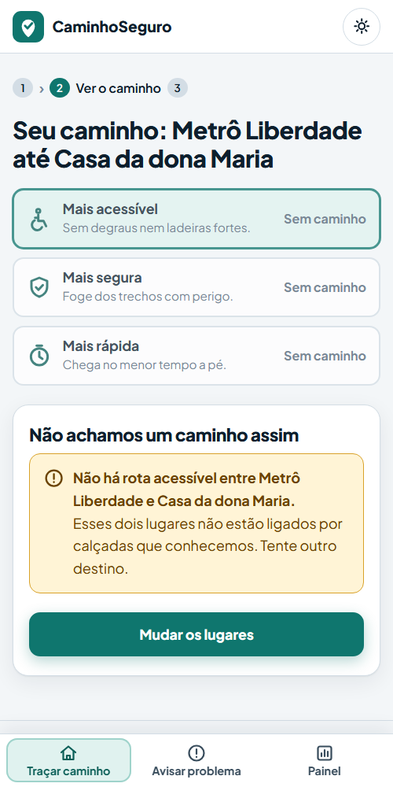
| Item | Versão / observação |
|---|---|
| IDE | IntelliJ IDEA (Community ou Ultimate); VS Code com o Extension Pack for Java também funciona |
| Java (JDK) | JDK 21 ou superior (java.version = 21 no pom.xml). A variável JAVA_HOME deve apontar para o JDK, não para um Java 8 |
| Maven | Não precisa instalar: o projeto traz o Maven Wrapper (mvnw e mvnw.cmd) |
| Framework | Spring Boot 3.5.16, springdoc-openapi 2.8.9 |
| Banco de dados | Oracle da FIAP (oracle.fiap.com.br:1521/ORCL), driver ojdbc11; ou H2 em memória (perfil h2) para teste rápido |
| Cliente SQL | Oracle SQL Developer (para rodar os scripts 01 e 02 no Oracle) |
| Deploy | Render (Web Service com Docker; imagem eclipse-temurin:21-jre) |
| Navegador / Git | Chrome, Edge ou Firefox atualizados; Git |
| Repositório GitHub | https://github.com/vitorbordalo/citizentech-caminhoseguro |
| Aplicação publicada (Render) | https://citizentech-caminhoseguro.onrender.com |
| Health check | https://citizentech-caminhoseguro.onrender.com/api/status |
| Swagger (documentação da API) | https://citizentech-caminhoseguro.onrender.com/swagger-ui.html |
Observação: no plano gratuito do Render o serviço "dorme" após alguns minutos sem uso, e a primeira chamada depois disso demora um pouco mais.
caminhoseguro-api no IntelliJ IDEA (File > Open). Aguarde o Maven importar as dependências.caminhoseguro-api:
./mvnw spring-boot:run -Dspring-boot.run.profiles=h2 # Linux, macOS e Git Bash .\mvnw.cmd spring-boot:run "-Dspring-boot.run.profiles=h2" # Windows (PowerShell)No IntelliJ, também dá para criar uma configuração de execução da classe
CaminhoseguroApiApplication com Active profiles = h2.h2 cria o banco em memória com schema-h2.sql e data-h2.sql (mesmos dados do DML).http://localhost:8080/swagger-ui.html (Swagger), http://localhost:8080/api/status (saúde) e http://localhost:8080/ (telas do front-end, servidas pela própria API).oracle.fiap.com.br:1521/ORCL e rode, nesta ordem, 04-database/01_DDL_caminhoseguro.sql (cria as 8 tabelas) e 04-database/02_DML_caminhoseguro.sql (insere os dados).| Variável | Descrição | Valor / padrão |
|---|---|---|
DB_URL | URL JDBC do Oracle | jdbc:oracle:thin:@oracle.fiap.com.br:1521:ORCL (padrão) |
DB_USER | Usuário (RM) | sem padrão |
DB_PASSWORD | Senha | sem padrão |
PORT | Porta HTTP | 8080 (padrão) |
$env:DB_USER="rm_aqui"; $env:DB_PASSWORD="senha_aqui" # PowerShell export DB_USER=rm_aqui DB_PASSWORD=senha_aqui # Git Bash / LinuxNo IntelliJ: Run > Edit Configurations > Environment variables.
./mvnw spring-boot:run (ou .\mvnw.cmd spring-boot:run). A rede da FIAP ou a VPN precisa estar acessível.http://localhost:8080/api/status e http://localhost:8080/swagger-ui.html.Os testes de integração (MockMvc, perfil h2) chamam os endpoints e conferem status, regras de negócio e o cálculo das rotas. Rode com ./mvnw test (ou .\mvnw.cmd test). Para gerar o pacote sem testes: ./mvnw package -DskipTests, que cria target/caminhoseguro-api-1.0.0.jar.
Teste manual sugerido (Swagger ou navegador): GET /api/rotas?origem=1&destino=3&criterio=ACESSIVEL deve devolver 3 locais e tempo total de 11 minutos (Ex. 6); GET /api/rotas?origem=1&destino=13&criterio=ACESSIVEL deve devolver 404 com a mensagem "Não há rota acessível...".
caminhoseguro-api/ deve ficar na raiz do repositório, ou aponte o Root Directory para ela no Render.render.yaml) ou New > Web Service, escolhendo o repositório e Runtime: Docker.DB_URL, DB_USER e DB_PASSWORD (o render.yaml declara as três com sync: false, então o Render pede os valores; a senha nunca vai para o Git)./api/status (já definido no render.yaml).Dockerfile em duas etapas (Maven com JDK 21 gera o .jar; imagem final eclipse-temurin:21-jre). O Render define a variável PORT e a aplicação já a lê (server.port=${PORT:8080}).https://SEU-SERVICO.onrender.com/api/status e /swagger-ui.html (o endereço real está em 9.2).DB_URL, usuário e senha e se está na rede da FIAP/VPN. Tabelas inexistentes (ORA-00942): rode os scripts 01 e 02 no mesmo usuário usado na aplicação. Porta 8080 ocupada: defina PORT=8081. "JAVA_HOME" aponta para Java 8: ajuste para o JDK 21 ou superior.| Item | Informação |
|---|---|
| Disciplina | Domain Driven Design - Java · Global Solution FIAP 2026.2 · CitizenTech |
| Equipe | Equipe 1, turma 2ESPH: Lucas Branquinho (RM 562262) e Vitor Bordalo (RM 561592) |
| Dados | Todos simulados; e-mails no domínio de exemplo .example. Não há dados pessoais reais |
| Segurança | Credenciais só por variáveis de ambiente; erros 500 não expõem stack trace; CORS liberado para o front do protótipo; sem autenticação nesta versão (limite assumido do protótipo) |
| Fora do escopo | Login real, fotos das ocorrências e mapas externos: ficam para versões futuras |
| ODS | 11 (metas 11.2 e 11.7), 10 (meta 10.2) e 3 (contribuição indireta) |
| IA como copiloto | Uso permitido pela disciplina e registrado em prompts.md no repositório |
| Documentos relacionados | Database Design (DER, DDL, DML, DQL), Agile (backlog e pitch) e CONTRATO_API.md (contrato dos endpoints) |